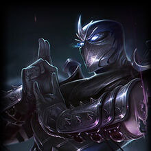
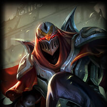
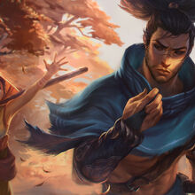
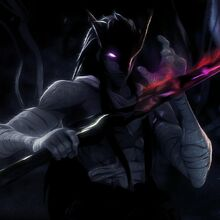

Jonia
Esta es la region mas apartada de todo Runaterra, es una gran isla al este de Valorant, casi pegada al Freljord. Es probablemente la region con mas magia de todas, no solo por ser el hogar nativo de los Vastaya, si no porque aqui se reunen la mayor cantidad de demonios y seres espirituales de todo Runaterra. Esta tierra esta gobernada por los lideres de diferentes ordenes, pero 2 de sus figuras mas importantes son El Ojo del Crepusculo y El ojo de la Tormenta.
Algunos de los campeones mas importantes de Jonia son:
|  |  |  |  |
|---|